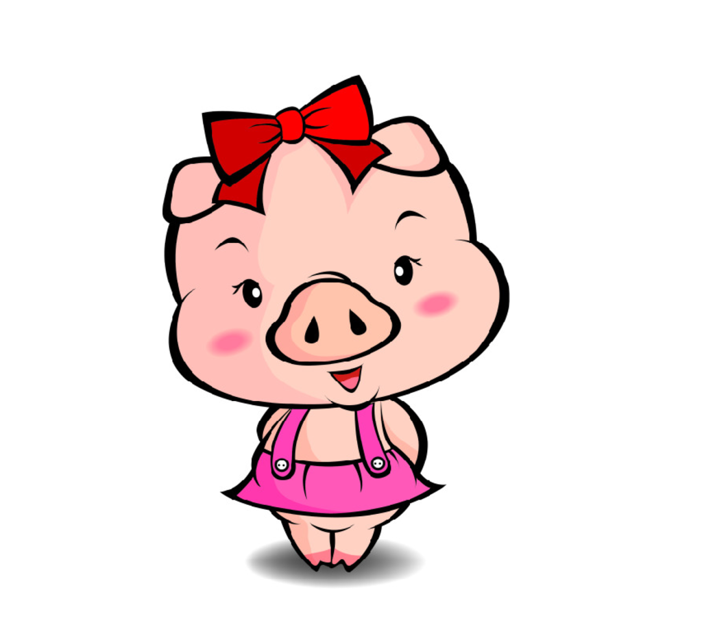

我是不是你最爱的人
19年3.13号认识的呀，时间过得真快哦
你喜欢喝安慕希，津威，喝果粒，喜欢吃麻辣烫，吃火锅，吃海鲜。温馨提示：别吃太辣，吃完辣和冰的，免得拉肚肚啦哦
我猜你又在熬夜，熬夜会变黑的哦
转眼过了几年，对你的感情越来越深，最大的幸福莫过于和你一起逛街，只逛不买的那种【狗头】
可爱的你100斤啦吧
可爱的女孩子果然很爱吃哦，但是一见面咋见你都还没我吃得多哦，可别爱吃辣么多垃圾食品哦，长肉肉不说，还不健康，过下下就200斤啦
多愁善感的你总是爱幻想，想着生啦一堆孩子，想着给孩子取名，想着以后的生活多好多好，这些总会实现的哦
过辣么多年啦，我有你的很多丑照哦，等以后给你裱起来挂床头嘿嘿嘿
你是我的小孩子，有时候我总是让你听话，虽然有时候语气不好，不要在意哦，不要多想哦，我只是希望你很好的啦，不听话打你屁屁
哈哈哈，感觉我还是不够注重细节呢，看来得找个老师好好学学啦，对吧，琴琴老师
品一杯茶，细品畅享人生，品到深处，浓厚醇香，安享岁月温良，爱琴总的花一辈子来慢慢品尝嘛
我的心中总有一种执念，就是和你好好生活，相伴相守，老来也能和你相伴看夕阳好打你屁屁嘿嘿嘿
能被我看上的女人总不会差的哦，你就被子里偷着乐吧哈哈哈哈哈嚯嚯嚯霍霍
你有九十九种美，在加上一种就是完美女人啦，就是自信美，加油哦嘻嘻
只愿君心似我心，定不负相思意
我的未来希望有你一直在，我的理想生活最重要的可就是你啦呢
爱你的焦雄
2022年7月26日
下面展示珍藏了多年的你的画像：
嘻嘻嘻可爱吧